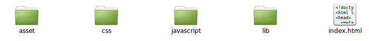
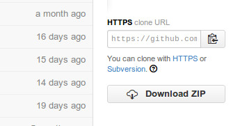
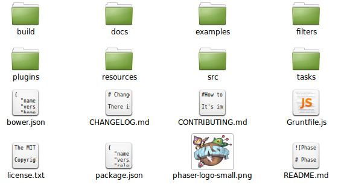

Phaser est une bibliothèque JavaScript développée par Richard Davey.
Elle permet une utilisation simplifiée de la balise HTML5 canvas (dessin, création de jeu, manipulation des pixels d'une image....). Pour en savoir plus sur la balise canvas, n'hésitez pas à consulter le site de Mozilla.
Phaser n'est pas un "logiciel", vous allez donc produire du code (en JavaScript). Votre code va nécessairement être appelé par une page HTML.
Dans un dossier "Phaser", que vous aurez créé au préalable dans votre dossier personnel, créez les dossiers et fichier suivants :
Vous allez maintenant télécharger la bibliothèque phaser en vous rendant sur le site : https://github.com/photonstorm/phaser
Une fois sur le site, cliquez sur le bouton "Download ZIP".
"Dézipper" le fichier phaser-master.zip que vous venez de télécharger.
Vous devriez alors vous retrouver avec un dossier phaser-master qui contient les dossiers et fichiers suivants :
Dans le dossier "build", vous devriez trouver le fichier "phaser.min.js". Placez ce fichier dans le dossier "lib" que vous avez créé dans le "À faire vous-même 1.1".
Afin d'avoir les différents éléments au centre de l'écran, nous allons créer un fichier "style.css" (ce fichier est à placer dans le dossier css que vous avez préalablement créé). Ce fichier est basique, mais vous pourrez évidemment l'enrichir comme bon vous semble.
style.css
h1{
text-align:center;
}
#content{
margin:0 auto;
width:800px;
}
Créez un fichier (pour l'instant) vide que vous nommerez "script.js" et placez-le dans le dossier "javascript" que vous avez créé précédemment.
Intéressons-nous au contenu du fichier index.html :
Cette page HTML devra définir une balise div (qui "contiendra" la fenêtre du jeu) et lancer les scripts JavaScript ("phaser.min.js" et "script.js").
Voici le code HTML minimum nécessaire à la bonne utilisation Phaser :
index.html
<!DOCTYPE html>
<html lang="fr">
<head>
<meta charset="utf-8">
<title>Créer un jeu avec Phaser</title>
<link rel="stylesheet" href="css/style.css">
<script src="lib/phaser.min.js"></script>
</head>
<body>
<h1>Phaser</h1>
<div id='content'></div>
</body>
<script src="javascript/script.js"></script>
</html>
Quelques remarques sur ce code :
La structure que nous venons de mettre en place (dossier "phaser") pourra être "copier-coller" à chaque fois que vous commencerez à coder un nouvel exemple. Dans la suite, seul le fichier "script.js" sera modifié.
Placez le code ci-dessous dans le fichier script.js et testez le programme en ouvrant le fichier index.html avec votre navigateur.
var game = new Phaser.Game(800,600,Phaser.AUTO,'content',{preload: preload, create: create,update:update});
function preload(){
}
function create(){
}
function update(){
}
Comme vous pouvez le constater, il ne se passe pas grand-chose : le titre défini dans le fichier index.html (Phaser) est bien présent à l'écran. De plus nous avons un "beau" carré noir qui s'affiche juste en dessous de ce titre (si ce n'est pas le cas, il se pourrait que vous ayez fait une erreur quelque part, reprenez le processus depuis le début afin de vérifier que vous n'avez rien oublié).
Pourtant la structure de base d'un projet Phaser est déjà présente, reprenons le contenu du fichier script.js ligne par ligne :
var game = new Phaser.Game(800,600,Phaser.AUTO,'content',{preload: preload, create: create,update:update});
Nous définissons un objet game à l'aide du constructeur Phaser.Game. Ce constructeur prend 5 paramètres :
Nous définissons ensuite 3 fonctions qui sont, comme dit plus haut, les fonctions de base de Phaser :
Il se peut que pour l'instant tout cela ne soit pas très clair pour vous, mais nous verrons dans la prochaine activité des exemples qui, je pense, clarifieront les choses.